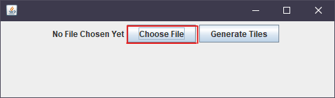
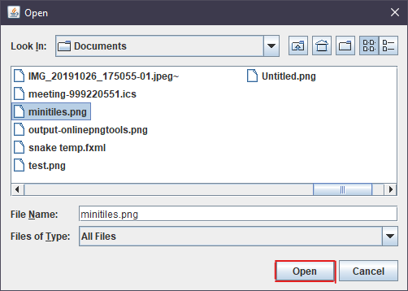
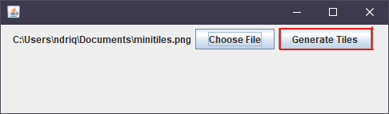

↜ Godot Tileset Generator
Firstly, let's look at some of the tilesets
These results came out of these three nano tilesets.
Working with the program is easy.
All you have to do is:
-
Open File chooser dialog box
 -
Navigate to your 3-tile tileset and select the file
 -
Press generate and keep on with game making

The generated file will be saved in the directory where the .jar file is